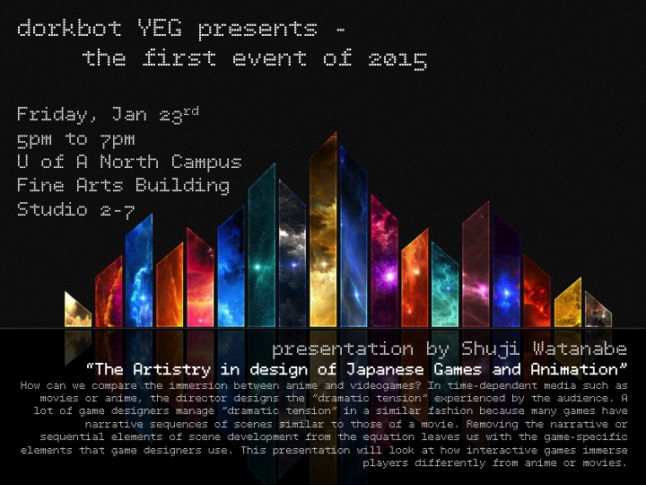

Next FREE Event: Friday, January 23rd, 2015 @ 5-7pm - U of A North Campus - FAB Studio 2-7
Contact the organizers at dorkbotedmonton (at) dorkbot (dot) org
What is Dorkbot?
Dorkbot is a local community-based organization of artists, engineers, designers, students, and other folks who are involved in creating electronic artworks, devices, objects, robots, instruments, installations, sculptures, and virtually anything geeky and arty.
We host regular meetings in which members can present what they are working on, get feedback, and discuss common issues.
Anyone is welcome to join.
Dorkbot Edmonton is one of a network of dorkbots that exist around the globe.
For more info about the dorkbot organzation, see http://dorkbot.org
Previous Meetings:
[ 2010.11.04
| 2010.12.11
| 2011.02.16
| 2011.10.23
| 2012.02.12
| 2013.10.27
| 2014.09.19
| 2014.10.17
| 2014.11.21
]
|